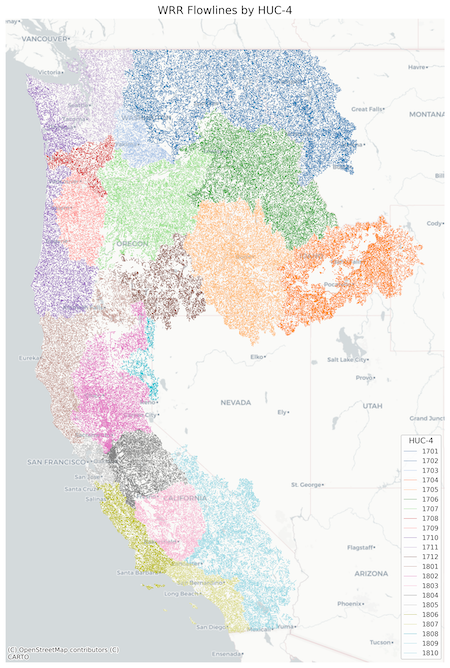

Description
This dataset provides daily mean streamflow (m3/s) 1979-2023 derived from the NOAA National Water Model v3.0 retrospective archive for Water Resource Region 17 and 18 (West Coast), covering California, Oregon, Washington and Idaho.
Hourly streamflow was processed using Python and xarray. Only NHDPlus COMID features marked as StreamRiver were retained. Daily means were calculated, and geospatial metadata is provided in GeoParquet and Parquet formats.

Click for full-size image
- Mean daily streamflow: NetCDF and Zarr
- COMID metadata and geometry: Parquet & GeoParquet
- Sample notebooks for usage
Example use. See more at README
Python (stream Zarr)
import xarray as xr
zarr_url = "gcs://nmfs_odp_nwfsc/CB/nwm_daily_means/wr1718/streamflow/zarr"
ds = xr.open_zarr(zarr_url, consolidated=True)
ds["streamflow"].sel(time="2018").isel(feature_id=1).plot()
Python (stream netcdf)
import xarray as xr
import fsspec
url = "gcs://nmfs_odp_nwfsc/CB/nwm_daily_means/wr1718/streamflow/netcdf/daily_mean_2018.nc"
fs = fsspec.filesystem("gcs", anon=True)
f = fs.open(url, mode="rb")
ds = xr.open_dataset(f)
ds["streamflow"].isel(feature_id=1).plot()
f.close()
Python (download netcdf)
import xarray as xr
import urllib.request
url = "https://storage.googleapis.com/nmfs_odp_nwfsc/CB/nwm_daily_means/wr1718/streamflow/netcdf/daily_mean_2018.nc"
urllib.request.urlretrieve(url, "daily_mean_2018.nc")
ds = xr.open_dataset("daily_mean_2018.nc")
ds["streamflow"].isel(feature_id=1).plot()
R does not allow streaming data from the cloud.
library(ncdf4)
url <- "https://storage.googleapis.com/nmfs_odp_nwfsc/CB/nwm_daily_means/wr1718/streamflow/netcdf/daily_mean_2018.nc"
download.file(url, "daily_mean_2018.nc", mode = "wb")
nc <- nc_open("daily_mean_2018.nc")
time <- ncvar_get(nc, "time")
streamflow <- ncvar_get(nc, "streamflow")[1,]
plot(time, streamflow)
Resources on Google Cloud
Bucket:
gs://nmfs_odp_nwfsc/CB/nwm_daily_means
Access: Public / no authentication required
Browse bucket folders:
- NetCDF files by year
- Zarr format (cloud optimized)
- Metadata
- Flowlines parquet files
- Sample notebooks